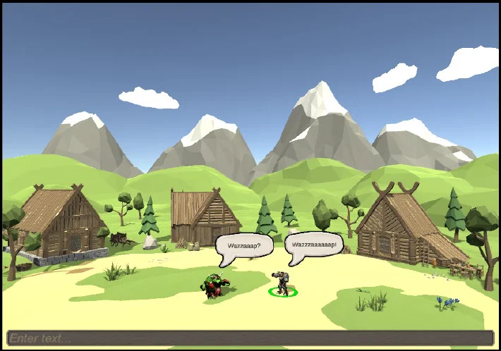

University technical project
TCP Networking
A TCP-based multiplayer communication project built in Unity and C# with a .NET console server.

Project Overview
This project let me explore the technical side of multiplayer communication beyond surface-level gameplay features.
I was interested in how data moves through a system, how messages should be represented, and how different client states can be kept manageable.
It also made me think more carefully about usability, because communication features only work well if the user can understand what is happening.
What I Worked On
- Implemented client-server communication logic and message flow.
- Worked on packet serialization and handling different message types.
- Supported multi-client interaction features such as private messages, chat rooms, and online presence.
- Focused on structuring communication in a way that stayed reliable and understandable.